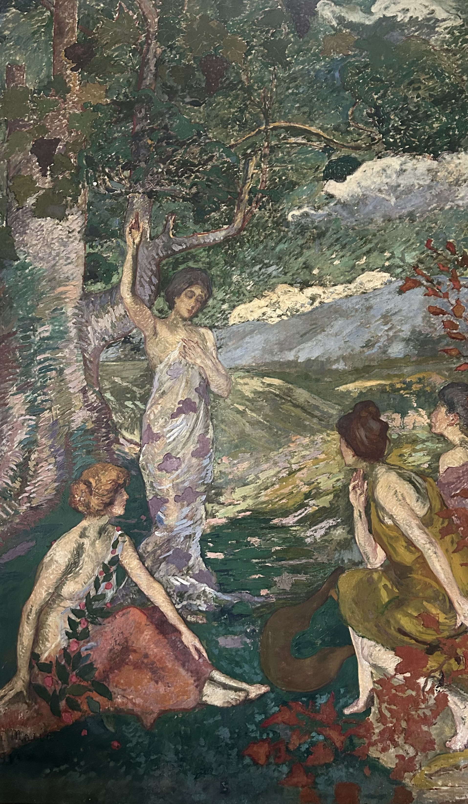
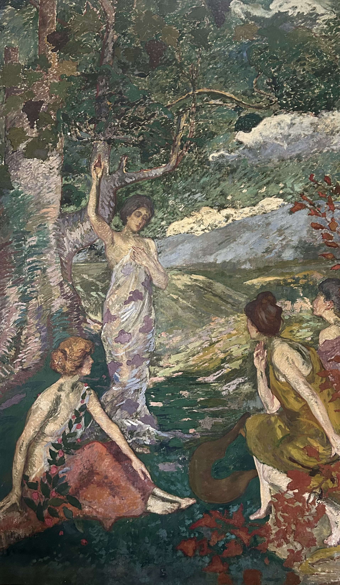

ANDRÉS SANTAMARÍA: TRÍPTICO


 

ANDRÉS SANTAMARÍA
Nacido en Bogotá el 16 de diciembre de 1860, Andrés Santamaría creció en el seno de una familia acomodada. A los dos años de edad, su familia se trasladó a Inglaterra, donde pasó gran parte de su infancia. Desde temprana edad, su vida estuvo marcada por viajes y educación en Europa, experiencias que influirían profundamente en su estilo artístico.
Su pasión por el arte lo llevó a estudiar en la prestigiosa Escuela de Bellas Artes de París, donde se sumergió en el vibrante ambiente artístico de finales del siglo XIX. Allí conoció las corrientes impresionistas y posimpresionistas que más tarde influirían en su estilo personal. París, en ese entonces, era el epicentro de la revolución artística, y Santamaría quedó fascinado por la libertad y el dinamismo de estas nuevas formas de expresión.
Con pinceladas audaces y una visión adelantada a su tiempo, Andrés Santamaría revolucionó la pintura en Colombia, dejando una marca indeleble en la historia del arte.
TRÍPTICO REVOLUCIONARIO
El "Tríptico de Andrés de Santa María" se destaca como una joya del arte colombiano, y se encuentra en el Paraninfo Francisco José de Caldas de la Universidad del Cauca en Popayán. Santamaría no sólo pinta, sino que crea un espacio de diálogo con el espectador, invitándolo a reflexionar sobre la historia de Colombia y la condición humana. A través de sus tres secciones, la obra narra una historia visual de sacrificio, lucha y esperanza, capturando la esencia de un país en constante cambio.
Pintada en 1928, representa escenas de la campaña libertadora liderada por Simón Bolívar, resaltando momentos clave en la independencia de Colombia; además, muestra su talento para captar la luz y el paisaje de la región andina del país. Esta obra se eleva más allá de lo visual, convirtiéndose en una narración llena de emoción y simbolismo. Con sus tres partes, el pintor no solo cuenta la historia, sino que le imprime vida y dinamismo. Cada pincelada parece vibrar con la energía de una nación en proceso de construcción, reflejando tanto la fuerza de sus protagonistas como la fragilidad humana que acompaña a cada lucha.
El tríptico, tradicionalmente visto en el arte religioso, añade un aire de solemnidad y simbolismo. Santamaría reinventa este formato sagrado para plasmar una epopeya terrenal: la lucha por la independencia. Cada panel tiene su propia voz, pero en conjunto forman una obra que va más allá de ser solo una ilustración histórica.
El uso de figuras dinámicas y gestos expresivos confiere a los personajes una sensación de movimiento continuo, como si el momento congelado siguiera fluyendo más allá del lienzo. El centro de la composición, ya sea Bolívar o algún otro símbolo importante de la obra, se convierte en el núcleo emocional y moral de la escena, representando la fuerza colectiva en lugar de la gloria individual. Quien observa no puede permanecer pasivo; es empujado a conectar con la escena, a imaginar los pensamientos y emociones de quienes la protagonizan. La obra, por lo tanto, no se limita a ser un retrato de la historia; es una invitación a revivirla.
El Tríptico de Andrés Santamaría es mucho más que una simple obra de arte; es un reflejo de nuestra historia y del alma colectiva. Con su composición vibrante y llena de emociones, Santamaría captura no solo una escena, sino también una profunda sensación: esa mezcla de sacrificio, esperanza y determinación que caracteriza los momentos más significativos de transformación social. Cada pincelada parece susurrarnos desde el pasado, recordándonos que las luchas de ayer no son tan diferentes de las que enfrentamos hoy.
La obra nos desafía, tanto a nivel individual como colectivo, invitándonos a reflexionar sobre cuánto hemos cambiado y qué ideales seguimos persiguiendo. En este sentido, el tríptico no solo guarda la memoria de una nación, sino que también la proyecta hacia el futuro. Nos deja la impresión de que la historia sigue viva, esperando que cada espectador continúe la narrativa desde su propio presente. La verdadera fuerza de esta obra radica en su habilidad para conectar lo épico con lo humano, lo histórico con lo emocional, y lo individual con lo colectivo. Santamaría no solo pinta una escena; nos ofrece una lección que resuena más allá del lienzo: la libertad, la identidad y la esperanza siempre serán batallas en constante construcción.
El Tríptico de Andrés Santamaría va más allá de ser solo una pintura; se convierte en una poderosa denuncia silenciosa y, al mismo tiempo, en un llamado urgente a la reflexión social. Más allá de su belleza estética e importancia histórica, esta obra nos enfrenta a una verdad incómoda: las luchas por la libertad y la justicia no son cosas del pasado, sino batallas que siguen vivas en nuestra realidad actual. Santamaría nos recuerda que los héroes no siempre llevan capas ni dirigen ejércitos. A menudo, son anónimos, invisibles, y sus luchas diarias rara vez se encuentran en los libros de historia. Así, el tríptico no es solo un tributo a quienes forjaron el pasado, sino un llamado a quienes estamos construyendo el presente. Nos desafía a preguntarnos: ¿Qué estamos haciendo hoy para honrar esas luchas? ¿Qué causas estamos ignorando por comodidad o indiferencia? En un mundo donde la desigualdad sigue presente, donde la voz de muchos permanece silenciada, esta obra nos sacude y nos obliga a mirar más allá de la estética. Nos invita a reconocer que la libertad nunca es definitiva, que la justicia nunca está asegurada, y que cada generación tiene la responsabilidad de continuar la obra inacabada de quienes lucharon antes; entonces, ¿Seremos meros espectadores de nuestra propia historia o protagonistas del cambio?
EL EQUIPO
Sofía Escobar • Sara García • Diana Sandoval • Juan Esteban Bernal • Brayan Torres • Nicolás Velasco